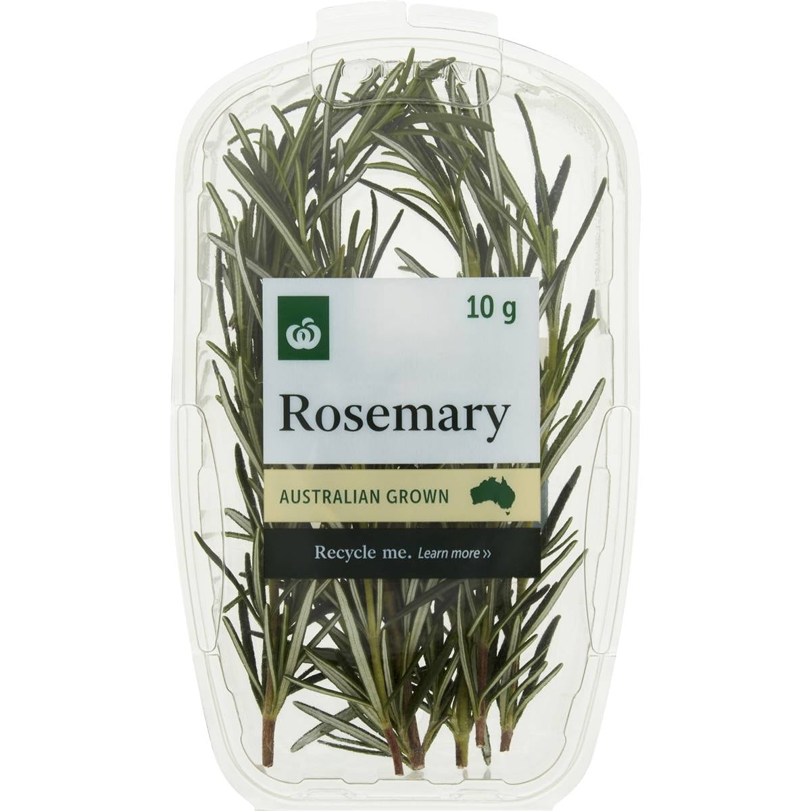
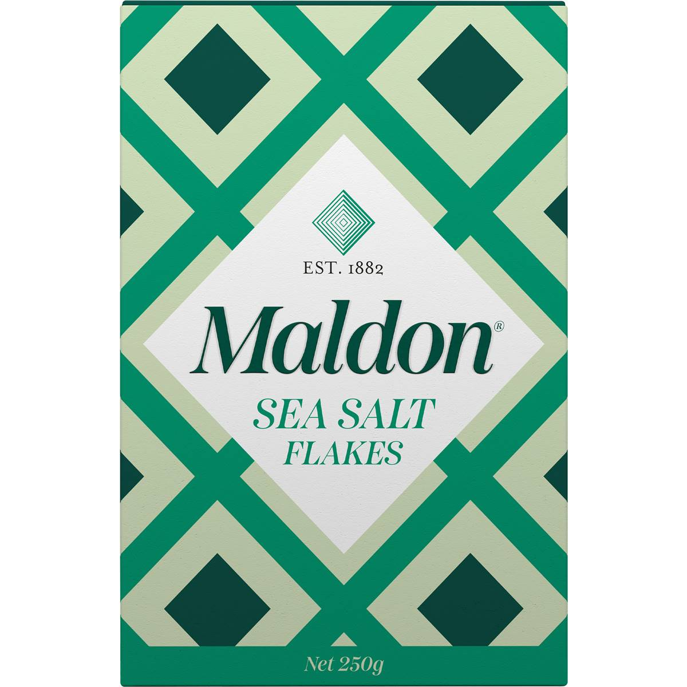

Fresh Focaccia
A tall, airy Italian flatbread with a crisp olive-oil crust and a dimpled, salty top.
A tall, airy Italian flatbread with a crisp olive-oil crust and a dimpled, salty top.
 500g bread flour
500g bread flour 400ml lukewarm water
400ml lukewarm water 7g instant yeast
7g instant yeast 10g salt
10g salt 60ml olive oil, plus extra for the tin
60ml olive oil, plus extra for the tin
A few sprigs of fresh rosemary
Flaky sea salt, for toppingBe generous with the oil in the tin; it fries the base and gives the crisp crust. If the dough springs back when you dimple it, leave it to rest another 30 minutes.